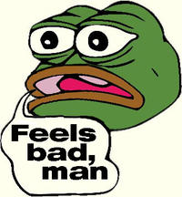

Pepe The Frog

Pepe the Frog (Pepe la rana) es un personaje antropomorfo de la rana de la serie cómica Boy's Club de Matt Furie. En 4chan, varias ilustraciones de la rana se han utilizado como caras de reacción, incluyendo Feels good man, Sad Frog, Angry Pepe, Smug Frog y Well Meme'd.
Origen
En 2005, el artista Matt Furie creó la serie cómica Boy's Club, que protagoniza a los monstruos adolescentes Pepe, Brett, Andy y Landwolf. A principios de 2008, un cómic en el que Pepe se baja los pantalones hasta los tobillos para orinar fue popularizado en 4chan, junto con la expresión "Feels good man".
Ejemplos de Pepes
| Nombre del Pepe | Imagen del Pepe |
|---|---|
| Donald Trump’s Tweet |

|
| Sad Frog |  |
| Smug Frog |